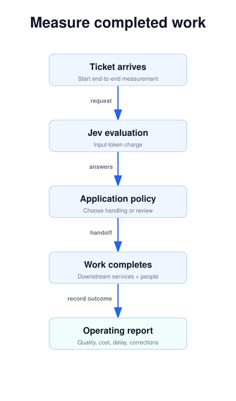
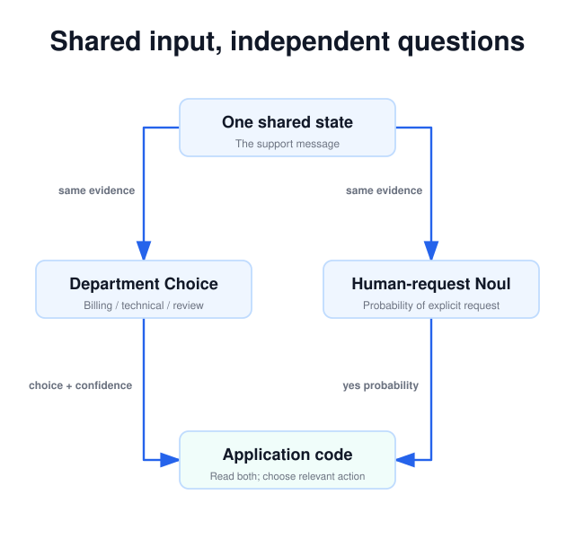

Part 4 of 4 · Documentation checked September 25, 2026
Jev’s API Bill Is Only the Beginning: Calculate the Cost of the Whole Workflow
Part 4 · Batch independent questions, preserve necessary dependencies, and measure the complete path.
The unit of value is the completed workflow
Jev’s low published input-token price makes it tempting to focus on the cost of one call. The better question is what it costs to complete a useful piece of work at an acceptable error rate. That includes the model request, any follow-up processing, review, and correction.
For our support workflow, the desired outcome is a ticket reaching the right owner with the relevant signals intact. A cheap department prediction is not enough if the request for a person disappears, if uncertain tickets accumulate, or if retries create duplicate assignments. Design and measure the whole path.
This article uses published TypeSafe pricing checked on September 25, 2026. The arithmetic is an estimate based on stated assumptions, not measured usage or a savings guarantee.
Process view · static diagram
The full unit of work
Open the linked SVG for full size; wide diagrams can be scrolled horizontally.
1. Batch independent judgments about the same input
Department and explicit human-request detection both depend on the original message. Neither requires the other’s answer. They can therefore share a request. TypeSafe calls a broader form of this pattern speculative fan-out: ask questions that may be useful, then let code ignore irrelevant answers.
For example, a support application might also ask whether a bug report contains reproduction steps. That answer is useful for a technical case, but may be irrelevant to a billing case. Asking it upfront can remove a later round trip. Extra question text still has a cost, so a large collection of unused questions is not automatically a good design.
Distinguish independence of execution from statistical independence. Two questions can run without waiting for one another and still make related mistakes because they examine the same incomplete message. Multiple agreeing outputs should not be counted as independent confirmations unless your evaluation supports that interpretation.
When a question needs new evidence, retain the dependency. If a later judgment requires the actual export error log, retrieve the log first. A speculative question cannot evaluate evidence that the initial state does not contain.
Process view · static diagram
Parallel questions share evidence
Open the linked SVG for full size; wide diagrams can be scrolled horizontally.
2. Estimate input-token spending with explicit assumptions
The Jev model page lists $0.042 per million input tokens, with output tokens free. On that basis, the following illustrative costs assume the stated average covers the entire billed input for each request, including state and questions. They exclude retries and all other services.
| Requests | Average input tokens | Total input tokens | Estimated Jev charge |
|---|---|---|---|
| 10,000 | 1,000 | 10 million | $0.42 |
| 100,000 | 2,000 | 200 million | $8.40 |
| 1,000,000 | 2,000 | 2 billion | $84.00 |
estimated_cost_usd = (
request_count * average_input_tokens / 1_000_000
) * 0.042The token price is an input to the calculation, not the workload description. If a message averages 2,000 tokens before you add queue definitions, examples, and instructions, the final request is larger. Replace estimates with recorded usage from representative calls as soon as it is available.
A simple batching illustration explains the mechanism. Suppose one shared state contributes 1,500 tokens and each of five questions contributes 100. Five separate requests would repeat the state and total approximately 8,000 tokens. One request would total approximately 2,000. That is a fourfold reduction in this simplified accounting, before serialization or other overhead. Your result depends on the actual state-to-question ratio.
Before / after · simplified token accounting
One shared state avoids repeated input
5 × (1,500 + 100) = 8,000Repeat the 1,500-token state with every 100-token question.
1,500 + 5 × 100 = 2,000Share the state; include each independent question once.
3. Add the costs outside the Jev request
Write down every step after classification. If one fifth of tickets reach a text-generating model, estimate that model’s input and output charges separately. If a reviewer handles ambiguous cases, include the review time. If misroutes create follow-up work, include the correction rate rather than treating the initial assignment as completion.
workflow_cost = (
jev_request_cost
+ downstream_model_cost
+ retrieval_and_storage_cost
+ human_review_cost
+ correction_cost
)This is an accounting framework, not an executable estimate: each term must come from your own workload and prices. It also helps explain why a slightly more expensive question can be worthwhile. Better criteria may add input tokens while reducing a much larger review burden.
Keep denominators consistent when comparing alternatives. Cost per submitted ticket includes failures and review. Cost per automatically resolved ticket measures a different outcome. Report which one you use, and pair it with quality and completion time so a cheap but incomplete path does not appear to win.
4. Measure latency and limits in your environment
Measure from the moment your application has the input to the moment it has a usable decision. Keep median and tail latency, such as the 95th percentile, alongside timeout and retry counts. Average response time can hide the slow requests that determine how a queue behaves during a busy period.
TypeSafe’s current model specification describes two context constraints: 64k tokens across a request and 32k for state plus the longest question. It also warns that rate limits are changing dynamically. Check the live limits before a load test rather than treating a published figure as reserved capacity.
Keep concurrency bounded and preserve unsuccessful work for retry or review. Separate obtaining a model answer from applying an external action. A retry of classification should not create another assignment event for the same ticket. Use the ticket identifier and your job records to make repeated processing recognizable.
If the service is temporarily unavailable, the ordinary review queue can remain an explicit fallback. It should be visible in monitoring, so an outage does not masquerade as a sudden increase in ambiguous customer requests.
5. Read performance claims in their original setting
TypeSafe’s launch evaluation compares models within common workflows and uses an average of stronger models’ outputs as reference probabilities. That differs from measuring agreement with independently established human ground truth. The company also notes that its workflow designers may introduce bias and that its larger reported gains may sit near the high end of real-world outcomes. See the launch evaluation discussion.
For your own comparison, give each candidate the same inputs and the same operational task. If your existing system needs only one label, do not compare it with a much more expensive configuration that generates lengthy explanations and probabilities unless those outputs are also required. Record model versions and inference settings.
A convincing result says something specific: on this held-out ticket population, with these acceptance rules, the new path achieved this coverage, correction rate, end-to-end latency, and cost. That is evidence someone else can assess. A broad claim that one model is always faster or cheaper is much harder to use.
When an extra question earns its place
Batching is most attractive when several judgments genuinely share a substantial input. A ticket’s department, request for a person, and presence of reproduction steps can all use the same message. By contrast, unrelated tickets do not necessarily benefit from being packed into a giant state. You would need to identify the relevant record in every question and consider whether the additional context distracts from each decision.
A practical way to assess a speculative question is to compare its always-paid input cost with the expected cost of asking it later. If only a small fraction of messages need a long, specialized question, sending that question for every ticket may be wasteful. If most tickets need it and the question is short, including it upfront may remove a frequent network round trip. Measure both paths using the same task.
The latency benefit also depends on what the user waits for. If the interface cannot display anything until department routing finishes, a dependent second call can be visible. If an overnight process has ample time, the tradeoff may favor smaller requests and simpler recovery. A faster individual response has value only where it improves the completed workflow or resource usage you care about.
Make speculative premises explicit. A question about whether a technical report includes reproduction steps should identify that it is judging the reported technical issue. Application code should ignore the answer when that branch does not apply. Do not send an otherwise clear billing request to review merely because an irrelevant technical question was uncertain.
Put the review queue into the budget
Consider an invented monthly workload of 100,000 tickets. At an assumed average of 2,000 billed input tokens per ticket, the published Jev rate gives an estimated model charge of $8.40 before retries. Now suppose 20 percent of those tickets require one minute of review each. That creates 20,000 review minutes, or about 333 hours. These assumptions describe an accounting example, not observed Jev performance.
If review time is valued at an illustrative $30 per hour, that review component is $10,000. The point is the difference in scale: an input-token estimate can be precise and still say little about the total process. Whether the review time represents new spending, existing staff time, or work already present in the baseline depends on your operation.
Compare incremental work with the existing process. If staff already read every ticket, routing suggestions may save a small amount of sorting time without eliminating the full minute. If automation allows some tickets to bypass triage, measure how much work actually disappears. Do not book the same minute as both avoided triage and avoided correction when it was only performed once.
Likewise, do not assume a wider automatic-action region lowers total cost. It can reduce review while increasing misroutes and follow-up contacts. Include the observed correction burden and compare the resulting service quality. An operating point is useful when it improves the outcome you need, not merely when it minimizes one line in the spreadsheet.
Interactive estimate · explicit assumptions
Compare token spending with review work
Review time: 333.3 hours. Partial subtotal only; excludes retries, other models, infrastructure and corrections.
Reuse judgments only while their meaning remains valid
Saved judgments are useful beyond threshold sweeps. If a reading tool scores relevance and technical depth separately, a user can change their preferred weighting without another inference request. The underlying evidence and rubrics have not changed; only the application’s preference has. This follows the composition approach in TypeSafe’s composite scoring pattern.
By contrast, a new customer reply can invalidate a ticket judgment. A message saying “The workaround has failed too” changes the impact evidence. Associate results with the version of the input they evaluated, and check freshness before applying them. A cached answer for yesterday’s state can be perfectly well-formed and operationally wrong today.
Store enough information to explain reuse. An application cache key might account for the normalized input, model identifier, and question version. That is a suggested application design, not a documented TypeSafe cache feature. Evaluate the normalization carefully: removing meaningful punctuation, speaker boundaries, or negation can merge inputs that deserve different judgments.
Keep hard requirements outside a compensating weighted average. A score for convenience should not cancel a failed permission check simply because the total looks attractive. Weights are useful when one preference can reasonably trade against another. Mandatory conditions belong in explicit application logic, with the relevant evidence and authorization checked before the action occurs.
Your first action: measure one bounded workflow
Choose one queue, one reviewed dataset, and one reversible outcome. Record a baseline for the current process. Then evaluate Jev with the same input population, preserving the confidence policy developed in Part 3.
Expand only when the complete path meets your needs. Add a question when it supports an observable action; add context when a documented error calls for it; add another model when the task requires capabilities the current path lacks. That gives you a practical way to adopt Jev incrementally while keeping the application understandable.